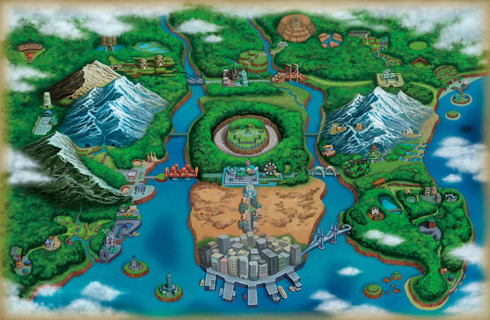

Unova Map
Oshawott (Japanese: ミジュマル Mijumaru) is a Water-type Pokémon introduced in Generation V. It evolves into Dewott starting at level 17, which evolves into Samurott starting at level 36. Along with Snivy and Tepig, Oshawott is one of three starter Pokémon of Unova available at the beginning of Pokémon Black, White, Black 2, and White 2. It also acts as one of the three starters for the Hisui region in Legends: Arceus alongside Rowlet and Cyndaquil.
Oshawott is a bipedal sea otter-like Pokémon. It has a spherical white head with small, triangular dark-blue ears on the sides. Oshawott's eyes are dark and its dark-orange nose is shaped like a horizontal oval. Several freckles cover its cheeks which may be premature whiskers, and two pointed teeth can be seen when it opens its mouth. The light blue fur on its body forms bubble shapes around its neck. Its arms are white and rounded, while its feet are dark blue with three toes each. It also possesses a rudder-like dark blue tail. It carries a pale yellow seashell called a "scalchop" on its belly. This shell is made of the same material as its claws, and is used for both battle and cracking hard berries. If heavily damaged or lost, Oshawott can grow new ones from its body, though it can take weeks.